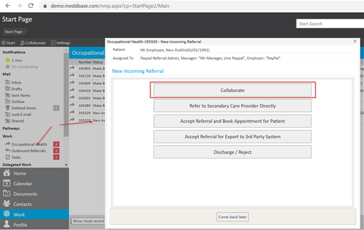
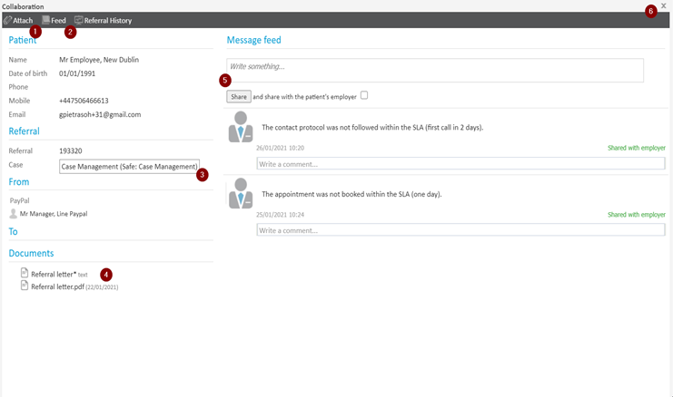
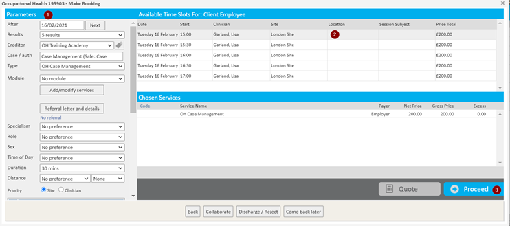

Occupational Health referrals sent through the Referral Portal generate Work Items in Meddbase, allowing processing the referral and tracking progress.
This article will walk you through processing a referral received into Meddbase electronically in the Case Management workflow.
Once the referral is sent via the Referral Portal, a Work Item is generated for a Meddbase user to process.
When a referral lands in the Work section in the Occupational Health inbox, the Meddbase user clicks on the New Incoming Referral item and on the next dialog window hits ‘Collaborate’.

The next dialogue window allows the Meddbase user to check the patient and the referrer’s details, as well as:

Once the patient has been successfully contacted, the Meddbase user clicks ‘Book appointment’ which brings up the Slot Finder, where they can:

On the next screen the user confirms the referral booking by clicking ‘Save’. Automatic booking confirmation messages are triggered at this point.